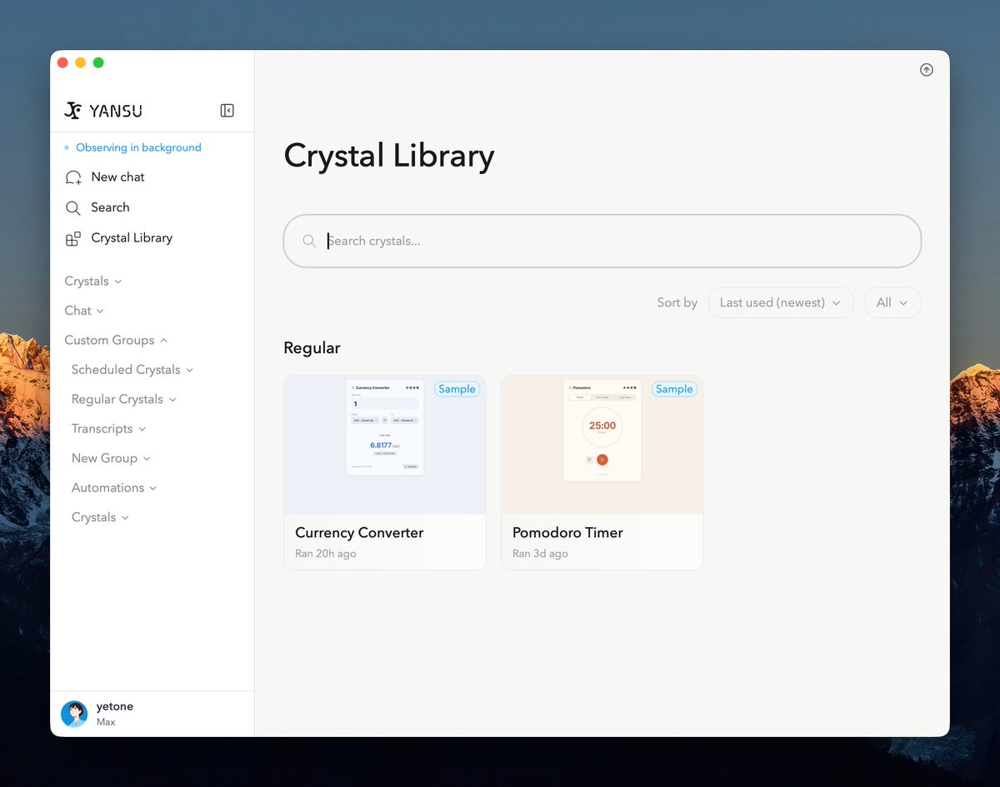
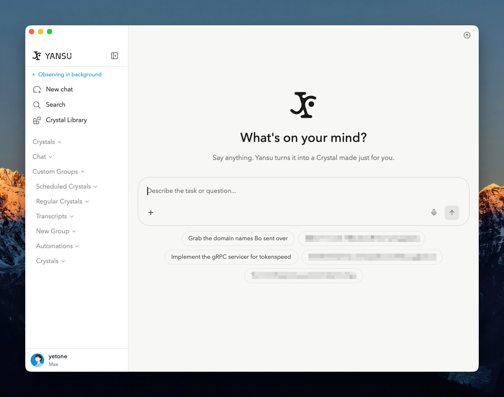
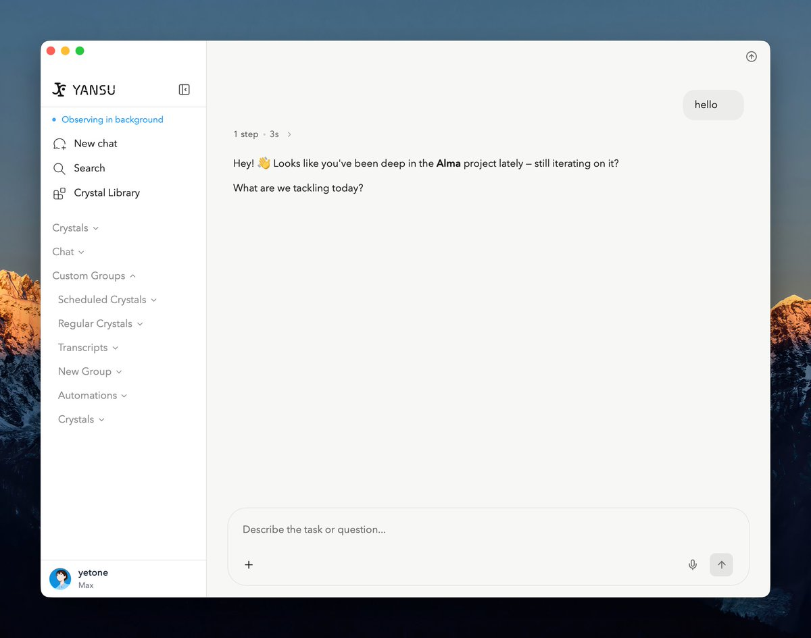

Wilf Lin
@Wilf_Lin
@yetone 疲于尝试各种AI应用中，但这个看起来很有意思



yetone
@yetone
我们的 Yansu App 今天终于 publish 了！
我们为什么要开发 Yansu App 呢？因为我们发现一个很有趣的事情：在以前需要人类亲手写代码的时候，人类分为 coder 和非 coder；在现在人类已经不需要再写代码的时候，人类还是分为 builder 和非 builder。这是因为并不是所有人都有 building sense。 https://t.co/44L4VEmkwb